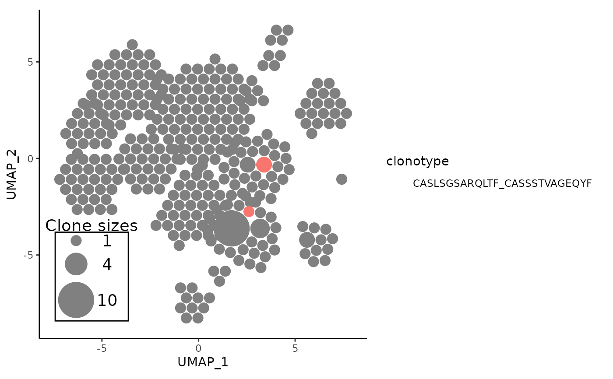
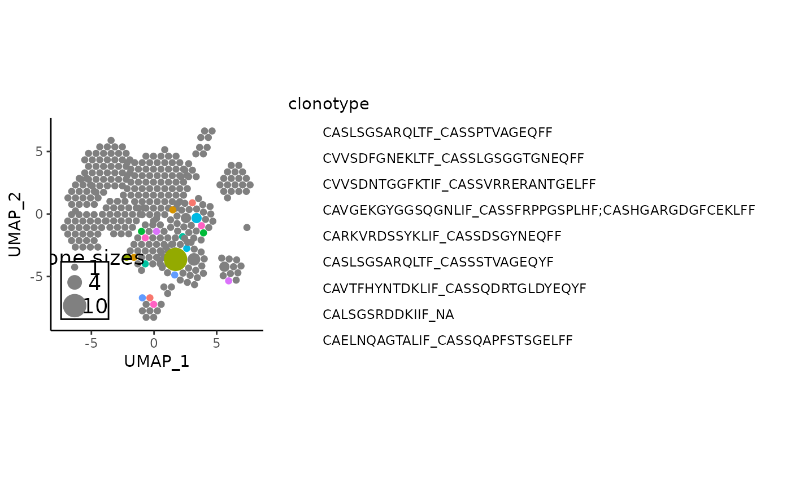

Highlight specific clones on an APackOfTheClones ggplot
Source:R/showCloneHighlight.R
showCloneHighlight.Rd![[Experimental]](figures/lifecycle-experimental.svg)
This is an analogue for scRepertoire::highlightClones that can highlight
certain clonotypes on an APackOfTheClones clonal expansion plot. For most
combinations of the arguments, there will be a ggplot fill legend on the
right side that correspond to each (existing) clonotype.
Usage
showCloneHighlight(
apotc_ggplot,
clonotype,
color_each = TRUE,
default_color = "#808080",
scale_bg = 1,
fill_legend = TRUE
)Arguments
- apotc_ggplot
A ggplot object that is the output of APOTCPlot or vizAPOTC of an APackOfTheClones plot to be highlighted on.
- clonotype
character vector of the sequence(s) to highlight. Note that it must be of the clonecall of the code that created the plot. A warning will be shown if any of the sequences are not present.
- color_each
Either a logical of length 1, or a character(s). It is
TRUEby default, which assigns a unique default ggplot color to each highlighted clone. IfFALSE, each highlighted clone will retain its current color and no legend based on color is shown. A possible application here is to simply gauge the distribution of any shared clone. It can also indicate the uniform color of each highlighted clone: if it is a character of length 1, all highlighted clones will be of that color. Else it must be a character vector of the same length asclonotype, with each color corresponding to the clone. Here is a suitable place to use any palette function from the many other CRAN palette packages such as"viridis"or"RColorBrewer". Note that currently, the user must ensureclonotypecontains only unique characters.- default_color
A character of length 1 or
NULLindicating the color of non-highlighted clones. IfNULL, all un-highlighted sequences will retain their original color insc.data. Else, if it is a character, it should be a valid color that all un-highlighted clones are. Defaults to the hexcode for gray.- scale_bg
A positive numeric. Scales the brightness value of each color of the non-highlighted clones by itself as a scaling factor. Defaults to 1 which will not alter the current brightness. Note that if
color_each = FALSEanddefault_color = NULL, this is equivalent to not highlighting any clones - in this case, it may be useful to alterscale_bgslightly so that the non-highlighted clones are darkened/brightened.- fill_legend
logical indicating whether a ggplot legend of the "fill" of each clonotype should be displayed.
Details
Under the hood, this function simply mutates the plotting dataframe under
$data in the ggplot object, and operates on a column named color.
Note that if color_each = FALSE and default_color = NULL, this is
equivalent to simply not highlighting anything and a warning will be shown.
Examples
data("combined_pbmc")
# piping the plot can be nice to read syntatically -
# By default, assigns unique colors to highlights and everything else is gray
vizAPOTC(combined_pbmc, clonecall = "aa", verbose = FALSE) |>
showCloneHighlight("CASLSGSARQLTF_CASSSTVAGEQYF")

# one useful application is to highlight shared clones - beware that the
# clonotype sequences may get extremely long in the legend
shared_aa_clones <- names(getSharedClones(combined_pbmc, clonecall = "aa"))
vizAPOTC(combined_pbmc, clonecall = "aa", verbose = FALSE) |>
showCloneHighlight(shared_aa_clones)
